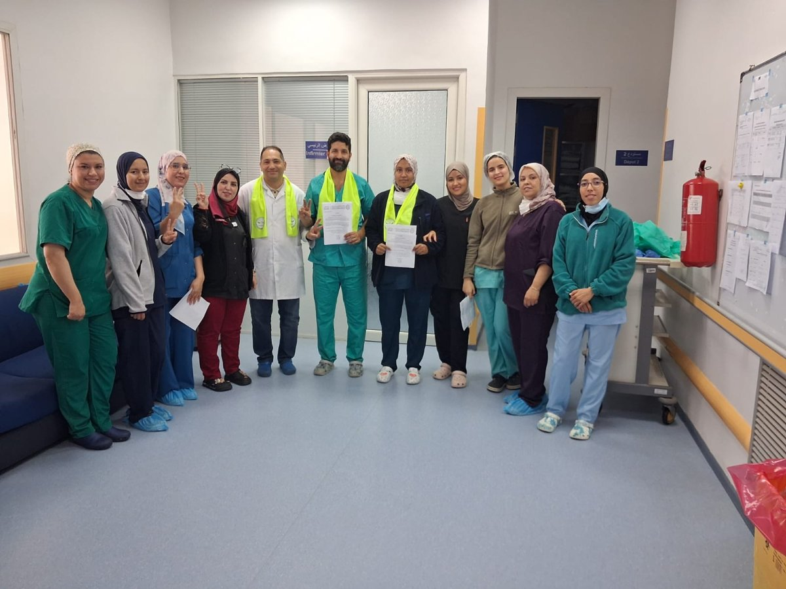

التعبئة للإنزال الوطني: سلا وآسفي وطاطا وشفشاون والجديدة… الأقاليم تنخرط وموعدنا الرباط يوم 5 دجنبر

مع اقتراب موعد الإنزال الوطني للنقابة المستقلة للممرضين وتقنيي الصحة، يوم السبت 5 دجنبر 2026 ابتداءً من الساعة 11:00 صباحاً أمام مقر وزارة الصحة والحماية الاجتماعية بالرباط، تتواصل في مختلف الأقاليم دينامية الحشد والتعبئة، تنزيلاً لمقتضيات البلاغ رقم 2 للمكتب الوطني «من الخصوصية إلى اللصوصية».
• سلا: جولة تعبوية بمستشفى مولاي عبد الله نظم مناضلو النقابة اليوم الأربعاء 25 نونبر جولة تعبئة بمستشفى مولاي عبد الله بسلا، للتواصل مع الممرضين وتقنيي الصحة ودعوتهم إلى المشاركة المكثفة في الإنزال الوطني. «جميعاً من أجل صون المكتسبات وتحقيق المطالب المشروعة.»
• آسفي: اجتماع للاستعداد للمحطة الوطنية عقد المكتب الإقليمي بآسفي اجتماعاً خُصص لتدارس ومناقشة مستجدات هذه المحطة النضالية، شكّل مناسبة لنقاش مستفيض ومسؤول حول مختلف الجوانب المرتبطة بالاستعداد لها، واستحضار متطلبات إنجاحها بما يعكس حجم المسؤولية النقابية ووحدة الصف المهني. وأكد المكتب انخراطه في المحطة الوطنية، ومواصلة استعداداته وتعبئته في أفق مشاركة إقليمية وازنة ومسؤولة.
• طاطا: «لا تنازل عن مركزية المناصب المالية» في بيان إقليمي بتاريخ 24 نونبر، أعلن المكتب الإقليمي بطاطا رفضه القاطع لكل محاولة للإجهاز على المكتسبات والضمانات القانونية للشغيلة التمريضية في مناصبها المالية المركزية ومركزية الأجور، وانخراطه الكامل واللامشروط في البرنامج النضالي التصعيدي، وفي مقدمته الإنزال الوطني. كما أعلن توسيع مقاطعة التقارير لتشمل كل التقارير المتعلقة بالبرامج الصحية، باستثناء حالات الاستعجال، إلى حين صرف تعويضاتها بأثر رجعي منذ أبريل 2024، إضافة إلى الحملات المتنقلة والتحسيسية والصحة المدرسية، وعزمه القيام بجولات تواصلية على امتداد تراب الإقليم. «لا تنازل عن مركزية المناصب المالية. لا بديل عن التحصين القانوني للمكتسبات. لا تراجع حتى تحقيق المطالب.»
• شفشاون: «استمرار الهجوم على المكتسبات سيجر قطاع الصحة نحو نقطة اللاعودة» في بيان إقليمي بتاريخ 25 نونبر، نبّه المكتب الإقليمي بشفشاون إلى أن الهجوم على مكتسبات الشغيلة الصحية بلغ ذروته، بفرض آلية النقل القسري داخل المجموعات الصحية الترابية، والزحف على المناصب المالية المركزية، والهروب إلى الأمام عبر لجان ولجينات وهمية للتنصل من الالتزام ببنود اتفاق 24 يوليوز. وأعلن دعمه الكامل للمكتب الوطني وحضوره المكثف في الإنزال الوطني، ومقاطعة التقارير المتعلقة بالبرامج الصحية والحملات التحسيسية وأنشطة الصحة المدرسية، داعياً كافة الممرضين وتقنيي الصحة بالإقليم إلى المشاركة المكثفة والاستعداد لكل تصعيد مرتقب. «وما ضاع حق وراءه طالب.»
• الجديدة: انخراط فعلي ولا مشروط عقد المكتب الإقليمي بالجديدة اجتماعاً تقييمياً وتداولياً وقف خلاله على مضامين البلاغ رقم 2، وأعلن في بيان بتاريخ 25 نونبر انخراطه الفعلي واللامشروط في مختلف المحطات النضالية التي سطرها المكتب الوطني: المشاركة المكثفة في الإنزال الوطني، ومقاطعة جميع التقارير باستثناء حالات الاستعجال إلى حين صرف مستحقات العاملين بالبرامج الصحية بأثر رجعي من أبريل 2024، وعدم المشاركة في الوحدات الصحية المتنقلة والصحة المدرسية، داعياً كافة المنخرطات والمنخرطين وعموم الممرضات والممرضين وتقنيات وتقنيي الصحة بالإقليم إلى التعبئة والوحدة.
من كل الأقاليم، الرسالة واحدة: موعدنا الرباط، السبت 5 دجنبر، على الساعة 11:00 صباحاً، أمام وزارة الصحة والحماية الاجتماعية.
الحقوق تُنتزع ولا تُعطى ✌️
فتح في تطبيق النقابة